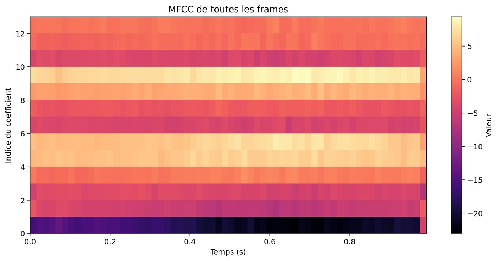
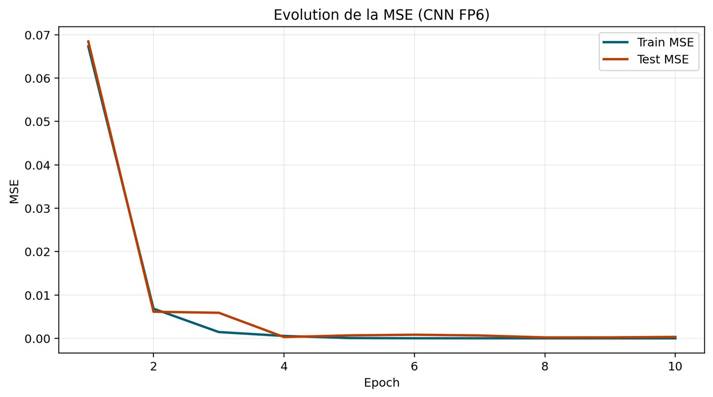
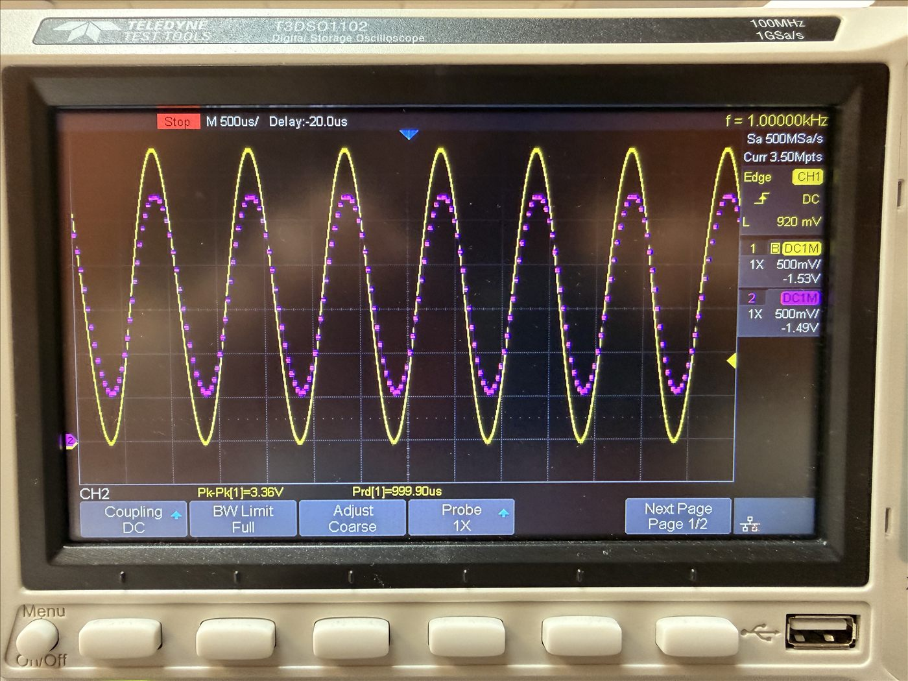
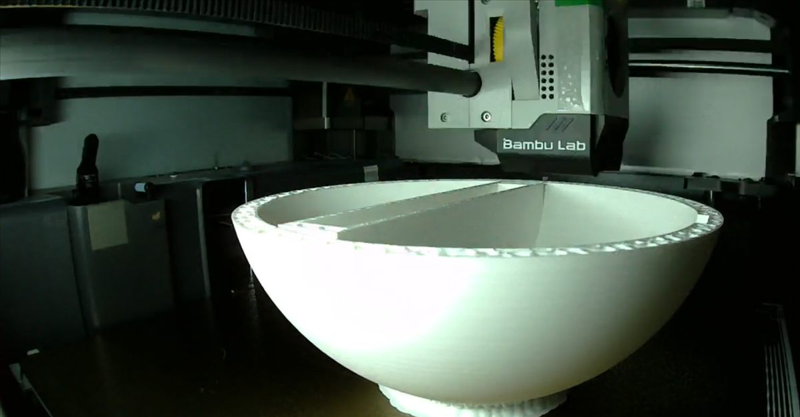

Le projet
Neural Speech est le projet d'électronique de 3e année, mené en équipe de quatre. L'objectif : reconnaître des mots prononcés, entièrement sur un Arduino Due, de l'acquisition du micro jusqu'à la classification par un réseau de neurones. Le PC ne sert qu'à préparer les données, entraîner le modèle hors ligne et afficher le résultat.
Notre cas d'usage, PokECE, en fait un Pokédex des professeurs de l'école : l'utilisateur prononce le nom d'un professeur, la carte reconnaît le mot, allume la LED correspondante et envoie le résultat à une interface sur PC qui affiche sa « fiche ». Le tout tient dans un boîtier en forme de Pokéball, imprimé en 3D.
Chaîne de traitement
Le son capté par le micro traverse huit étapes, toutes calculées en temps réel sur l'Arduino Due :
- MicroMAX9814 sur l'entrée A0, centré à mi-tension
- ADC 12 bits≈ 32 kHz, déclenché par le timer TC0
- Filtre RIF31 coefficients, passe-bas à 3,4 kHz
- DécimationUn échantillon sur 4, soit ≈ 8 kHz
- Frames256 échantillons, recouvrement de 50 %
- SpectrePré-accentuation, fenêtre de Hamming, FFT 256
- MFCC26 filtres Mel, log, DCT : 13 coefficients
- CNNReconnaît le mot, allume la LED associée
Chaque seconde de voix devient ainsi une matrice de 62 frames × 13 coefficients MFCC, qui décrit le timbre du signal au cours du temps :

Filtrage en temps réel
Le filtre RIF travaille en virgule fixe (format Q12) sur un buffer circulaire : à chaque nouvel échantillon, il calcule une convolution de 31 produits, puis la décimation ne garde qu'un échantillon sur quatre. Mesuré sur la carte, ce traitement prend 12 µs par échantillon, alors que le budget entre deux échantillons est de 31 µs.
// Filtre RIF sur buffer circulaire, puis décimation par 4
bool processStreamingSample(uint16_t adcValue, uint16_t &decimatedSample) {
const int16_t centered = static_cast<int16_t>(adcValue) - ADC_CENTER;
firRingBuffer[firWriteIndex] = centered;
int32_t accumulator = 0;
size_t readIndex = firWriteIndex;
for (size_t tap = 0; tap < FIR_TAP_COUNT; ++tap) {
accumulator += static_cast<int32_t>(firCoefficients[tap]) *
static_cast<int32_t>(firRingBuffer[readIndex]);
readIndex = (readIndex == 0) ? FIR_TAP_COUNT - 1 : readIndex - 1;
}
firWriteIndex = (firWriteIndex + 1) % FIR_TAP_COUNT;
// Un échantillon de sortie tous les 4 échantillons d'entrée
if ((++inputSampleCount % DECIMATION_FACTOR) != 0) return false;
// … mise à l'échelle Q12 et écriture de decimatedSample
return true;
}src/ET3.cpp.Réseau de neurones embarqué
Le réseau est entraîné sur PC avec PyTorch, à partir d'un jeu de données de 314 enregistrements construit par l'équipe. Ses poids sont ensuite exportés dans un en-tête C autonome, qui contient aussi les paramètres de standardisation et le code d'inférence exécuté par l'Arduino :
Entrée 62×13 MFCC
→ Conv 5×3, 8 filtres, ReLU → MaxPool 2×1 (31×13×8)
→ Conv 3×3, 12 filtres, ReLU → MaxPool 2×1 (15×13×12)
→ Dense 2340 → 32, ReLU
→ Dense 32 → 3, softmax
Avant l'inférence, un contrôle de niveau (valeur efficace et crête) écarte les captures trop faibles : le système répond alors « Inconnu » plutôt que de deviner.
Fonctionnalités avancées
- Trois mots au lieu de deux. Le cahier des charges demandait d'en reconnaître au moins deux. Avec trois mots, l'erreur est même passée de 3,3 % (2 sur 60) à 2,2 % (2 sur 90).
- Déclenchement automatique à la voix. Avec le bouton, il fallait synchroniser l'appui et la parole. La carte écoute désormais en continu : elle compare le niveau moyen du signal, sur des fenêtres d'environ 10 ms, à un seuil qui s'adapte au bruit de fond, et ne se déclenche qu'après plusieurs fenêtres consécutives au-dessus du seuil. Un pré-enregistrement de 150 ms évite de couper le début du mot.
Tests et résultats
Le projet est construit en étapes successives, chacune validée par un test sur la carte avant de passer à la suivante :
| Étape | Objectif | Mesuré |
|---|---|---|
| Échantillonnage | ≈ 32 kHz | 31 987,81 Hz |
| Filtre anti-repliement | ≥ 30 dB dès 4 kHz | −34,96 dB à 4 kHz −88,92 dB à 8 kHz |
| Temps de filtrage | < 31 µs | 12 µs |
| Découpage en frames | 256, recouvrement 50 % | 62 frames, sans erreur |
| Entraînement (MSE en test) | < 0,05 | 3,3 × 10−4 |
| Jeu de données | ≥ 100 éléments | 314 captures |
| Classification | < 10 % d'erreur | 2,2 % (2 sur 90) |

Matériel et boîtier
- Arduino Due, imposé par le cahier des charges ;
- module micro MAX9814, avec préamplificateur à gain automatique, sur l'entrée A0 ;
- trois LED de résultat protégées par des résistances de 220 Ω ;
- un bouton poussoir pour lancer une acquisition manuelle ;
- un schéma électronique réalisé sous KiCad ;
- un boîtier en forme de Pokéball, imprimé en 3D.
